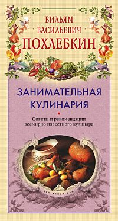

Тайны хорошей кухни. Глава 5 .

 Варка и варево
Варка и варево
Варка — один из главных кулинарных процессов, одна из девяти основ, столпов, колонн, на которых зиждется все здание кулинарии.
Варево — это в широком смысле слова результат варки, а в более узком лишь часть блюд, которые в какой-то степени сохраняют в своем составе жидкость. Те же блюда, которые после варки остаются однородно жидкими, без ясно различимой твердой части (кисели соусы, кремы), или только твердыми, без всякой жидкости (отварные мясо, рыба, картофель, грибы и т. д.), к вареву не относятся. В варево входят, следовательно, супы, кашицы, каши, компоты и промежуточные блюда: кулеши (полукаша-полусуп), узвары (полукомпот — полуфруктовая каша), фруктовые гущи (полукомпот-полукисель).
Уже из этого далеко не полного перечня типов блюд видно, что варка не только один из основных кулинарных процессов, но и самый обширный, разветвленный и, так сказать, всепроникающий способ приготовления пищи. Короче говоря, при помощи варки можно приготовить блюда почти всех категорий, в том числе и часть кондитерских.
Варкой называют всякое приготовление сырых продуктов, как простых (фруктов, ягод, овощей, трав, грибов, ракообразных, моллюсков, рыб, яиц, птицы, дичи, мяса), так и сложных (теста, солений и квашений, копченостей, вяленых и сушеных изделий, кисломолочных продуктов), в любой кипящей жидкости, кроме масел и сахаров, а также в парах или при посредстве паров этих жидкостей.
Таким образом, варке могут подвергаться все первичные сырые пищевые продукты и большинство сложных, уже прошедших одну из стадий кулинарной обработки или же представляющих собой комбинацию простых продуктов, как, например, тесто. Иными словами, вся известная человечеству пища может быть представлена в отварном виде. Отсюда ясно, что отварных блюд не только больше всего, но и что они безраздельно доминируют в любой национальной кухне.
Способов варки несколько, и они создают различный вкус и консистенцию одного и того же продукта. Варка осуществляется в различных жидкостях — в воде, в молоке, в растительных соках, в вязких крахмалонасыщенных средах или в средах желирующих, вроде пектина, агар-агара, рыбьего клея, желатина, либо в токе пара, над паром или рядом с паром. Совершенно ясно, что, используя только варку, можно получать самые разнообразные вкусовые нюансы одного и того же продукта.
К сожалению, на практике незнание различных способов варки приводит к обеднению стола и меню, к однообразию во вкусе, форме и аромате наших повседневных блюд. Ибо под варкой обычно понимают лишь ее самый обычный и простейший вариант — отваривание в воде.
Но даже и этот вариант используется далеко не полностью, а лишь в самом узком и самом, кстати сказать, нерациональном виде: отваривают в большой воде. Это значит, что в кастрюлю с водой, которой по массе значительно больше, чем отвариваемого продукта, просто закладывают или погружают мясо, рыбу, овощи, грибы и т. д. и начинают нагревать воду на плите, ожидая, когда она закипит, а затем сварит еду своим теплом. При этом на варку тратится больше времени, и в результате утрачивается больше полезных питательных веществ, в частности, исчезают почти все витамины, а отваренный продукт становится безвкусным.
Более рациональна варка, при которой продукт сразу закладывается в кипящую воду, а еще лучше припускание, когда варка идет в малом количестве равномерно кипящей воды, под крышкой.
Если же важно получить отваренный продукт, а жидкость, в которой происходит варка, в расчет не принимается, то припускание ведут паром. Для этого наливают очень мало воды в кастрюлю, на дно ее кладут либо плоские камешки, либо крест-накрест расположенные палочки, либо ставят опрокинутое блюдце, мисочку, или же применяют специальное сетчатое перфорированное второе дно, а уже на эти предметы помещают рыбу, овощи или тестяные изделия (пельмени, вареники) так, чтобы уровень воды был ниже продуктов или они касались бы ее лишь слегка. Воду кипятят при закрытой крышке, отчего кастрюля наполняется паром, в котором и варятся продукты. В этом случае вымывание полезных веществ из пищи происходит в еще меньшей степени, чем при припускании.
Есть и другой способ варки паром, который называется «на пару». В этом случае в большую кастрюлю наливают до половины или двух третей кипящей воды, обвязывают кастрюлю сверху льняной салфеткой так, чтобы она слегка провисала в середине, в салфетку, как в гамак, кладут пищевые продукты (обычно крупы, чаще всего так отваривают рис) и ставят кастрюлю на огонь, а продукты в салфетке закрывают опрокинутой тарелкой. Такая варка на пару идет очень быстро, и рис или другая крупа получаются рассыпчатыми, не насыщенными излишней водой. Этот способ варки очень удобен не только в домашних условиях, но и в походе, когда нет достаточного количества чистой посуды, воды, условий для промывки отваренного риса, а требуется получить как можно быстрее готовое для еды блюдо. Вполне понятно, что раз продукт в салфетке не касается воды и сосуда, где она кипит, то это может быть и обычное ведро, и нелуженая посуда, и не совсем пригодная для питья и для непосредственного отваривания в ней речная ли колодезная вода.
Все рассмотренные нами способы относятся к так называемым контактным, когда вода (жидкость) или пар непосредственно контактируют с продуктом, а сосуд, в котором происходит варка, — непосредственно с огнем.
Способы варки отличаются и разной интенсивностью подогрева. Иногда продукты варят на слабом огне, и жидкость все время не доводится до кипения, а лишь подогревается. К этому методу прибегают, когда надо варить не твердые продукты, а молоко, сливки, овощные и фруктовые соки (они расслаиваются при кипении на прозрачную жидкость и мякоть), кисели, компоты и даже некоторые супы, прежде всего овощные протертые, супы-пюре. Перекипание их ведет к изменению структуры, состава и вкуса. Поэтому все они варятся или приготавливаются только на слабом огне путем подогрева.
Это гарантирует сохранение их вкуса и питательности. Нежные овощи, такие, как цветная капуста, перцы, помидоры, кабачки, не выносят бурного кипения, а «привыкли» к слабому, тихому, едва заметному, но все же кипению. Только мясо, рыба, грибы и корнеплоды могут вариться вначале при интенсивном кипении.
Особое место занимает варка круп для каш. Почти каждая из них имеет свой норов. Поэтому о кашеварении, а также о варке бобовых — фасоли, бобов, гороха, чечевицы — мы будем специально и подробно говорить ниже.
Сейчас же продолжим наше перечисление всех имеющихся способов варки в воде.
Вторая группа методов — это так называемая бесконтактная варка пищи. О ней говорят крайне редко, а применяют в домашней кухне еще реже. Между тем бесконтактные способы придают пище совершенно новый, всегда более приятный вкус, разнообразят наше питание и, в сущности, не требуют никаких особых усилий. В бесконтактных способах варки не происходит непосредственного соприкосновения среды, в которой варится пища, или даже самой посуды, где находится пища, с огнем.
Это достигается тем, что сосуд (кастрюля, горшок, чугунок), в котором находятся продукты, ставится не на огонь, а в другой, больший по размерам, сосуд, куда наливается вода, и этот большой сосуд помещается на огонь. Таким образом, тепло, чтобы нагреть пищу, должно быть многократно передано: большому сосуду, воде в большом сосуде, второму, меньшему, сосуду и, наконец, пище в этом меньшем сосуде.
Бесконтактная варка требует гораздо большего расхода тепла и времени для приготовления пищи, но зато вкус, консистенция, аромат обычных рыбы, мяса, овощей становятся необычными.

Сделайте такой опыт. Возьмите большую фаянсовую или фарфоровую чашку (в крайнем случае — эмалированную) полусферической формы, а еще лучше, если есть, пиалу. В глубокую тарелку влейте свежее яйцо. Взбейте его вилкой, ножом, ложкой или специальным металлическим веничком, долейте затем полстакана молока, еще раз взбейте, всыпьте измельченную небольшую луковицу (можно пропустить ее через мясорубку), посолите, поперчите красным перцем, добавьте мелко-нарезанную дольку (зубчик) чеснока, еще раз хорошенько перемешайте, перелейте смесь в пиалу (ее можно предварительно слегка обмазать сливочным маслом изнутри) и поставьте ее в предварительно подготовленную низкую широкую кастрюлю с кипящей водой. Вода должна быть налита так, чтобы сантиметра на два она не доходила до краев пиалы. Кастрюлю поставьте на сильный огонь и следите за тем, как ведет себя ваша яичная смесь. Когда она станет застывать у краев, осторожно отодвигайте свернувшиеся, загустевшие куски и давайте доступ к горячим краям чашки жидким фракциям яичной смеси. Минут через 7 — 10 смесь загустеет почти во всей чашке. Осторожно перемешайте ее, дайте прогреться для равномерного загустения (это можно будет определить по цвету), затем выньте пиалу из кастрюли, посыпьте ваше блюдо укропом, если это лето, или смажьте томатной пастой, если это осень, и горчицей, если это зима, и попробуйте.
Получился омлет, но не плоский, а толстый, высокий, и не жареный, а словно бы вареный, воздушный, но в то же время не водянистый, а плотноватый, с приятной бархатной консистенцией и с совершенно своеобразным вкусом, не напоминающим ни жареное, ни вареное яйцо. Такой омлет с удовольствием и с пользой едят маленькие дети. Его лучше усваивают и переваривают больные люди, он оказывается приятной вкусовой неожиданностью для здоровых людей, которым порядком приелись обычные яичницы и крутые яйца.
Такая варка называется водяной баней, ибо вода окружает пиалу с яичной смесью, словно человека в ванне.
Есть другой вариант водяной бани, когда в большой котел, наполненный кипящей водой, ставится небольшая кастрюля, до краев набитая кусочками мяса, картофеля, овощей, заложенных рядами так, что мясо и крепкие, плотные овощи располагаются ближе ко дну кастрюли, а нежные овощи — ближе к ее крышке. Если крышка закрыта плотно, герметично, то тогда это будет водяная баня. Но если крышку у кастрюли снять, а котел с водой, где она стоит, плотно закрыть крышкой и продолжать кипятить в нем воду, то такая варка будет называться уже паровой баней, ибо пища будет вариться не водой, а паром, исходящим из котла. Вкус пищи при этих разных способах варки различен.
К обоим способам приходится прибегать в походных условиях, когда есть грубая посуда, которую не жалко коптить на огне костра, и хорошая, чистая небольшая посуда, которая может испортиться, если в ней варить пищу непосредственно, например, если она эмалированная. В этих условиях водяная или паровая баня не только дает возможность получить вкусное блюдо, но и служит хорошим выходом из трудного «посудного» положения.
В домашних условиях можно использовать еще один вариант паровой бани, дающий превосходный вкусовой эффект.
Возьмите достаточно большую глубокую эмалированную кастрюлю. Налейте в нее на одну треть или четверть воды (кипятка). Внутрь поставьте фарфоровую или фаянсовую мисочку, чашку или большую пиалу (касу) так, чтобы налитая в кастрюлю вода не доходила до ее краев не менее чем на треть высоты ее стенок и чтобы пиала стояла устойчиво.
В пиалу положите мелко нарезанный лук, ломтики картофеля, моркови, кусочки мороженой рыбы (желательно филе без костей), посолите достаточно, поперчите, сдобрите лавровым листом и закройте кастрюлю (но не пиалу с рыбой и овощами!) плотной крышкой, а поверх нее накиньте влажную салфетку. Все это «сооружение» водрузите на горелку газовой плиты, дайте воде закипеть (что можно услышать по звуку и что должно произойти через 3 — 4 минуты, если в кастрюлю влит кипяток и сразу же разведен большой огонь), а затем убавьте огонь, сделайте его минимальным, так, чтобы он едва-едва горел. После этого вы можете спокойно оставить ваше блюдо без надзора на два-три часа и проведать его лишь затем, чтобы убедиться, не выкипела ли вода (в этом случае надо осторожно подлить кипяток). Но лучше всего взять кастрюлю побольше, налить достаточно воды и уверенно оставить блюдо томиться на четыре-пять часов, чтобы заняться другими делами и, главное, не приоткрывать за это время кастрюли и не выпускать из нее драгоценный пар.
Когда намеченное время пройдет и вы откроете кастрюлю, то вас ждет сюрприз. В пиале, куда вы положили только сухие твердые продукты, окажется душистый, прозрачнейший и ароматнейший суп, какой вы вряд ли когда-либо пробовали. А рыба и овощи будут столь нежны и столь неожиданны, необычны по вкусу, что вы непременно захотите попробовать это блюдо еще и еще раз, а главное — угостить этой изысканной пищей ваших близких и знакомых. Медленность приготовления полностью искупается не только качеством, но и тем, что это блюдо не заставит вас беспокоиться, а будет вариться само собой.
Таковы сюрпризы забытой бесконтактной варки, которой наслаждались люди прошлых эпох. Но можно быть уверенным, что она найдет своих горячих приверженцев и ныне. Стоит только попробовать один раз!
До сих пор мы рассматривали виды варки в зависимости от контакта огня (источника тепла) с пищей и посудой. Но виды варки меняются и от состава продуктов. Выше мы уже частично познакомились с этим явлением, но далеко не полностью.
Так, чтобы получить рассыпчатый, вкусный, не склеенный между собой рис, надо варить его на пару. Чтобы рыба не была выварена, чтобы овощи были вкусными, надо варить их не в большой воде, а припускать.
Чтобы мясо было сочным, а не жестким и безвкусным, надо закладывать его в крутой кипяток. Только тогда образующаяся белковая пленка предохранит мясо от вываривания, создаст известную герметичность и сохранит его сочность.
Наоборот, если из мяса намерены получить в первую очередь хороший навар, крепкий бульон, то его надо закладывать в холодную воду и вываривать на умеренном огне, при спокойном кипении.
Таким образом, изменяя полностью или видоизменяя частично вид варки, можно достигать различных результатов. Здесь, в области варки, уже кончается собственно азбука и начинается подлинная кулинарная серьезная наука.
Порой и сам продукт диктует повару, какой вид варки к нему следует применить. Иначе блюдо будет испорчено.
К таким продуктам-диктаторам, крайне капризным к методу варки и любящим только свой, особый, им присущий метод, относятся все бобовые: соя, фасоль, горох, бобы, чечевица, маш.
В вводной главе мы уже говорили о том, что соя — самый чувствительный белковый продукт, требует особенно нежного обращения при нагревании и дает эффект лишь при условии крайне медленного нарастания температуры. Для этого недостаточно ограничиться малым огнем и растянуть время нагревания. Важно еще, чтобы оно распространялось в массе соевых бобов равномерно, почти незаметно и не действовало бы ни на одну из частей подогреваемой массы больше, чем на другую. Запомните следующие приемы. Во-первых, сильно увеличивают массу подогреваемого сырья, чтобы тем самым резко уменьшить долю тепла, поступающего на каждую единицу веса бобов. Во-вторых, все время перемешивают, чтобы предотвратить нагревание в одном направлении, и, кроме того, меняют положение котла (посуды), где идет варка, чтобы ни одна из частей его стенок не нагревалась больше, чем соседняя.
Чтобы ослабить контакт соевого сырья с теплом, бобы предварительно замачивают в холодной, обязательно кипяченой воде на сутки. Это дает разбухание боба, увеличение его водянистости, охлаждение и увеличение промежутков воздуха между отдельными бобами, поскольку они становятся крупнее и не столь плотно прилегают друг к другу в котле, как сухие.
Все указанные приемы используются также при варке других бобовых. При этом, конечно, учитываются размеры бобовых зерен. Так, фасоль, особенно крупную, надо варить с большей осторожностью, чем маш и чечевицу.
Как и сою, бобовые целесообразно перед варкой замачивать. Фасоль на 10 — 12 часов, горох-нут (или бараний горох) на 6 часов, горох обыкновенный (русский или желтый) на 6 — 8 часов, горох серый (или прибалтийский) на 4 — 5 часов, бобы черные (русские или кубинские) на 4 часа, маш на 2 часа, чечевицу на полчаса-час.
После замачивания бобовые заливаются холодной сырой водой так, чтобы она покрывала их на 1 сантиметр. Но если бобовые не замочены предварительно, то надо налить холодной воды на 3 — 5 сантиметров выше их поверхности, а иногда и больше. При этом допустим крайне слабый, медленный огонь. Только тогда бобовые будут мягкими, хорошо сварятся.
Вкус замоченных и незамоченных бобовых после варки будет различен. Бульон из замоченных бобовых будет лишен специфического «горохового» привкуса, а сами бобовые, особенно горох, приобретут вкус и запах, очень близкий или напоминающий орехи.
Сухие бобовые, сваренные без предварительного замачивания, будут сохранять знакомый большинству «обычный» специфический гороховый запах. Эта разница во вкусе произойдет оттого, что в процессе замачивания с бобовых всегда сходит верхняя пленка, незаметная, присохшая к каждой горошинке.
Эта пленка и есть источник «горохового» запаха, в то время как сами ядра, зерна бобовых, его не имеют.
С некоторых бобовых, как, например, с гороха-нута (нохута), снятие внешней пленки обязательно. Поэтому его всегда предварительно замачивают.
Варка бобовых имеет и еще одну особенность — ее надо вести до полного выкипания воды. Если бобы сварились, а вода пока выкипела не вся, нельзя увеличивать огонь. Иначе можно испортить за несколько секунд все блюдо. Бобы (горох, фасоль) моментально затвердеют, ибо белок в них сразу же свернется, как в крутом яйце.
Вот почему, если фасоль или горох сварены, а вода осталась, ее надо просто слить, а лучше дать выкипеть самой, открыв крышку кастрюли, но ни в коем случае не увеличивая огня.
Солить все бобовые можно лишь в самом конце варки, после того, как пробой установлено, что они мягкие. Тогда либо сыплют соль в остаточную воду (которую через несколько минут сливают или выпаривают), либо солят их сухими, когда вода уже выкипела или слита. Конечно, при этом соразмеряют количество соли: в воду с фасолью — больше, в фасоль без воды — меньше.
КашеварениеВсем известно слово «кашевар». Но не все представляют, чем отличается эта кулинарная профессия от поварской. Повар, конечно, шире. Повар должен уметь сварить и суп и кашу. А кашевар, если он только кашевар, уже не сможет сварить хорошего супа, зато кашу сделает неизмеримо лучше, чем разносторонний повар-кулинар.
В чем же здесь дело?
Повар, который пользуется в основном варкой, жарением и тушением, даже при всех своих практических знаниях, опыте не может уделять постоянное внимание только одному виду блюд — каше. Он сварит ее в кулинарном отношении грамотно. Но и только. Шедевра из каши он не создаст. Его каша будет обычной и не вызовет ни восхищения, ни упреков.
Совсем иное дело — кашевар-специалист. У него нет эрудиции, нет знаний и принципов, но у него есть опыт. Он сидит только на кашах. И если он любит свое дело, если он наблюдателен, то в совершенстве изучил норов каш. В них для него нет секретов, сюрпризов. Он знаком со всеми неожиданностями, которые могут преподнести каши. Ведь зерно бывает каждый раз другого качества: то зрелее, спелее, то зеленее, то суше, то с большим запасом белков, то крахмалистее, то слизистее — и это у одного и того же сорта крупы, которая нам, профанам, кажется совершенно одинаковой и сегодня, и завтра, и год-два спустя. А ведь один и тот же вид зерна может иметь несколько разновидностей, несколько сортов, отличающихся объемом, формой, размером, длиной. Возьмем тот же рис, ту же гречневую или перловую крупу. Для хорошего кашевара все это имеет значение, все это он учитывает, приступая к варке.
Но большее значение, чем крупяное сырье, имеет правильный расчет воды или другой жидкости (молока).
Конечно, существуют примерные коэффициенты, но именно примерные, приблизительные. Вода тоже может быть очень разной: мягкой, жесткой, средней, насыщенной минеральными солями, сильно хлорированной и т. д. При варке каши все эти качества значительно важнее, чем при варке супа, а тем более при отваривании мяса, рыбы, овощей и бобовых.

Почему?
А потому, что при отваривании, скажем, пельменей, лапши, картофеля мы вообще сливаем воду, в которой варились эти продукты. Она нужна нам лишь как среда. Иногда так поступают и при отваривании морской рыбы, мяса. Если мы будем есть суп или отвар из жесткой воды, то сразу почувствуем, что он чуть-чуть невкуснее, чем из мягкой воды. Но такая вода не повлияет на бобовые, они почти до конца варки будут надежно защищены от ее проникновения своей плотной второй оболочкой, так же как и на кусок мяса или рыбы в супе, ибо эти продукты в процессе варки выделяют защитную белковую оболочку.
Совсем иное дело каши.
Во время варки зерна, особенно дробленого, почти вся вода или большая ее часть идет на разваривание, на разбухание этого зерна, на превращение его в кашу. Она, следовательно, никуда не улетучивается, а впитывается в зерно, остается в каше, составляет ее нерасторжимую часть.
Поэтому качество воды для каши важнее, чем для варки других видов пищи. Более того, при варке супа жесткая вода лишь ослабит ароматичность и приятную бархатистость бульона, а при варке каши минеральные соли жесткой воды обязательно осядут, задержатся в зерне. Вот почему каша как бы «вдруг» может стать невкусной, хотя для нее взято хорошее зерно, она варилась положенное время, не подгорела и т. д. Но для хорошего кашевара такое «вдруг» не должно происходить. Он, зная коварство каш, или, вернее, коварство воды при варке каш, предусмотрит любую неожиданность.
Самое простое — заменить воду, опробовав ее заранее. Для этого надо вскипятить немного воды и заварить ею ложечку, пол-ложечки черного чая в чашке, а затем попробовать. Насыщенная минеральными солями, жесткая вода даст неприятный металлический привкус, чай будет резко горьким. Опытные кашевары не нуждаются в таком определении. Они устанавливают жесткость воды просто в холодном виде. На то и опыт.
Но как быть, если воду нельзя заменить?
Оказывается, и здесь есть выход: нужно вскипятить эту воду, а затем варить кашу уже на кипяченой воде. Вкус от этого значительно улучшается. Есть и еще один прием, который обычно используют народы Юга и Востока: отварить в воде зерно наполовину, не дав ему вобрать в себя воду, не дав развариться, а затем слить воду и, добавив в полусваренную кашу немного молока, продолжать держать ее на огне до полного вваривания молока в кашу. Если же молока мало, то можно с самого начала варить кашу на водно-молочной смеси, добавив любое имеющееся количество молока к воде и произведя общий расчет жидкости, необходимой для того, чтобы сварить кашу данного вида.
К этому же последнему приему относится и внесение в самом начале приготовления в воду, на которой варится каша, жира, масла. Цель та же: смягчить жесткость воды и усилить способность каждого зернышка отталкивать воду, так, чтобы она шла не на его разваривание изнутри, а на варку извне и последующее вываривание.
Чтобы практически закрепить хотя бы часть этих сведений, попробуем сварить разные виды каш, руководствуясь изложенными положениями.
Гречневая каша
Наиболее проста в смысле варки гречневая каша, имеющая хорошее естественное защитное покрытие каждой зернинки и не выделяющая при варке слизь (крахмал). Испортить гречневую кашу трудно, и тем не менее ее сплошь и рядом готовят неумело, невкусно.
Почему?
Да потому, что кажущаяся простота ее приготовления заставляет действовать на авось, а не по правилам. Между тем, как ни покажется странным, а кашеварные правила похожи на математические — они точны, ясны, кратки и нетрудны для запоминания.
Для гречневой крупы на каждую единицу объема крупы должно браться вдвое больше по объему воды (1:2). И это соотношение должно соблюдаться не на глазок, а абсолютно точно, до грамма!
Для рисовой крупы, если она варится в воде, — свое соотношение: 200 кубических сантиметров (миллилитров) крупы на 300 миллилитров воды (2:3). Но есть и определенные правила выдержки температуры, силы огня (его интенсивности) и давления.
Именно о них часто забывают, исполнив точно то, что касается соотношения крупы и воды. И поэтому каши превращаются в самые невкусные блюда. А ведь когда-то они были самыми лакомыми. Они были сами по себе вкусными, оттого что в них сохранялись витамины и особые ароматические вещества, оттого что их молекулярная и атомная структура не нарушалась из-за неверного режима давления.
Все это мы можем понять и объяснить теперь, в конце XX века, на основе современных знаний о веществе и материалах вообще. Но люди, жившие 100 — 200 лет назад и более, готовили правильно чисто эмпирически, на основе повседневного опыта, наблюдая, что и при каких условиях удается, а что нет.
Так, для гречневой каши требуются плотная крышка, сильный огонь в течение первых 3 — 5 минут до закипания воды, а затем спокойное, умеренное кипение, в самом конце — слабое, до полного выкипания воды не только с поверхности, но и со дна кастрюли или котелка. Кроме того, необходима металлическая (неэмалированная) кастрюля или казанок с утолщенным выпуклым, а не горизонтальным, плоским дном. Именно эта конструкция облегчает выкипание жидкости со дна и создает равномерное прогревание и разбухание всей каши.
И еще одно важное правило для большинства каш: засыпав крупу и залив ее водой, не трогать, не мешать, не вторгаться в процесс, не подымать и не приоткрывать крышку. Каша варится не столько водой, сколько паром, и поэтому выпускать его — значит недодать каше положенного тепла. Иначе каша либо подгорает, сохнет, либо, если мы пытаемся «помочь» ей, хотим устранить свою ошибку и подливаем воду, превращается в размазню, портится.
Отсюда вывод: исправить ошибку в середине приготовления каш практически нельзя. Лучше все делать по правилам с самого начала и ни в коем случае не вмешиваться в процесс приготовления.
Рисовая каша
Еще более капризна в этом отношении рисовая каша или отварной рис. Известно, что в странах традиционного рисосеяния — Японии, Вьетнаме, Корее, Индии и других — рисом питаются ежедневно и он обладает таким вкусом, который не получается при европейских способах варки. Даже в самых лучших ресторанах Европы не могут сварить его так вкусно, как в самой захудалой восточной харчевне.
Отчего?
Оттого, что варят у нас рис в большой воде, сливают слизь, промывают затем кипятком, а иногда перед варкой подсушивают, обжаривают — словом, делают массу операций, работают вовсю, чтобы получить такой же рассыпчатый рис с несклеенными рисинками, как на Востоке. И получают, но… какой ценой! Полным разрушением оболочки и вымыванием крахмалистых и белковых веществ риса. Получают, в сущности, красивую оболочку, чисто декоративный продукт. Надо ли удивляться, что он невкусен! Это вполне естественно. Скорее удивительно, что его все-таки можно есть!
Уже способ варки риса на пару, о котором мы говорили в начале главы, дает возможность, не делая массы ненужной работы, сохранить большую часть питательных и вкусовых веществ риса. Большую, но не все!
Ибо даже на пару рис в подвешенном состоянии в кипящую под ним воду некоторую часть своего состава. Но он будет значительно вкуснее риса, сваренного, или, вернее, вываренного целиком в воде. А можно сварить рис в воде и не выверить его? Можно.
Как? Как варят на Востоке.
Точное соотношение: 200 (риса) : 300 (воды).
Вода — кипяток, сразу же, чтобы не шло лишнее, трудно рассчитываемое в каждом отдельном случае время на доведение воды до кипения.
Плотная, наиплотнейшая крышка, не оставляющая никакого зазора между собой и кастрюлей, а для того, чтобы не растерять точно отмеренный пар, — груз, тяжелый гнет на крышку, который не давал бы подняться ей даже в наивысший момент кипения.
Раз все точно рассчитано, то и время варки должно быть абсолютно точно: 12 минут. (Не 9, не 15, а точно 12.)
Огонь: три минуты сильный, семь минут умеренный, остальные — слабый.
Каша готова. Но не спешите открывать крышку. Здесь-то и подстерегает вас еще один секрет. Оставьте крышку закрытой и не трогайте кашу ровно столько времени, сколько она варилась. Пусть она постоит на плите ровно двенадцать минут. Затем откройте. Перед вами — рассыпчатая каша, чуть плотноватая.
Положите поверх нее кусочек сливочного масла граммов в 25 — 50, чуть-чуть посолите, если любите солоно. И размешайте ложкой как можно равномернее, но не мня «куски», не растирая кашу.
Вот теперь можно попробовать! Ну как?!
Посмотрите на себя в… зеркало! Ручаюсь на сто процентов, что на вашем лице написано нечто смахивающее на смесь недоумения и удивления. Как будто вам подсунули то, что вы меньше всего ожидали увидеть.
Так оно и есть! Вы ждали, что рис будет иметь обычный, знакомый вам как свои пять пальцев вкус рисовой каши.
Оказывается, ею… и не пахнет!
Только когда вы съедите весь рис, на вашем лице определенно появится удовлетворение и даже удовольствие. Теперь вы можете наконец сказать, что знаете настоящий вкус риса.
Не забудьте только заглянуть в зеркало!
Несколько слов о варке пшена, перловки, овсяной и манной круп. Соотношения воды здесь в большинстве случаев не так важны, как у риса и гречки, а главное внимание надо уделять обработке и температуре, а также давлению; любую крупу следует тщательно перебрать.
Пшенная каша
Пшено, перебрав, вымойте раз шесть-семь, под конец в горячей воде, прежде чем начать готовить из него что-либо.
А почему это нужно?
Да потому, что пшено бывает чрезвычайно загрязнено. Промывать его надо до тех пор, пока вода не станет прозрачной. Покрытие (шелуха) у каждого зернышка крепкое, лакированное, ему ничего не будет от лишней промывки. А когда вымоется, то надо его чуток и отпарить: вот почему нужно в последний раз промывать пшено горячей водой.
Варят пшено всегда в большой воде, в любом количестве, до полуготовности, не ожидая, чтобы зерно разварилось и открыло свои недра. Эту воду все равно сливают, А затем доливают молока и варят до его выпаривания и полной готовности пшенной каши.
Хотя пшено считается малоценной кашей, попробуйте его сваренным по всем правилам. Думаю, понравится, особенно если молока взять побольше и разварить сильнее, а затем через час долить в еще теплую кашу простокваши и либо есть сразу, либо дать постоять ночь. Такая подкисленная пшенная каша чрезвычайно вкусна и тоже не имеет навязчивого вкуса обычной пшенной каши, приевшейся всем. «Любит» пшенная каша также заправку салом пополам со сливочным маслом и луком.
Овсяная каша
Все знают о том, что овсяная каша полезна и детям и взрослым. Но те и другие частенько не любят ее. Одна из причин в том, что овсяная каша для взрослых должна готовиться совершенно не так, как для детей. Более того, есть овсяная каша только для взрослых, и есть овсяная каша только для детей. Они отличаются приготовлением и самой крупой.
Однако часто бывает, что детям готовят как раз кашу для взрослых, а взрослым предлагают детскую. Никто не подозревает, что произошла ужасная путаница, и обе стороны бывают недовольны такой пищей или даже отказываются от нее.
Но стоит лишь привести все в соответствие, как овсяная каша станет действительно любимой едой и взрослых и детей.
Как же это сделать? И что надо сделать?
Прежде всего, взрослой овсяной кашей считается каша из целого, недробленого и немятого овсяного зерна. Обращаться с этим зерном надо так же, как с рисом. Более того, его можно смешивать с рисом и варить вместе. Пропорции смесей произвольные, но вкуснее бывает, когда рису чуть больше. Такую овсяную или овсяно-рисовую кашу, как и всякую крутую, рассыпчатую, можно заправлять маслом или (и) жареным луком.
Детской овсяной кашей считается любая каша из дробленого, нецельного (давленого) или молотого овсяного зерна (толокна).
Почему?
Потому что дети с их нежными слизистыми полости рта плохо воспринимают жесткую, крутую, рассыпчатую овсяную кашу с ее плотноватой оболочкой, которую именно за ее крутость и плотность (есть что жевать!) ценят взрослые, особенно мужчины.
Дробленое зерно, а тем более молотое (толокно) совсем лишено оболочки, варится быстро и дает одну клейко-слизистую массу, по консистенции приятную для ребенка. Но масса эта невкусная. Поэтому ее принято сластить, скрашивать сахаром. И ребенок ест, с грехом пополам, с уговорами, присказками, привыкая есть подслащенную кашу в любое время дня.
Но это как раз и портит вкус ребенка. Не вкус данного блюда. Не вкус на несколько часов или на один день. А тот Вкус с большой буквы, который должен быть для человека путеводной нитью в его кулинарных скитаниях в течение всей жизни и который он обязан не только сохранять в чистоте, но и передавать потомкам.
Здесь, отвлекаясь от конкретной каши, хочется со всей серьезностью подчеркнуть, что вкус надо воспитывать с детства, потеря его столь же ненормальное явление, как слепота, глухота, хотя и не столь заметное.
Вкус — это один из видов ощущения человека, один из видов познания окружающей нас материальной среды. Наряду с обонянием, зрением и осязанием, которые дают нам представление о запахе, цвете, форме и консистенции пищевых продуктов, вкус составляет классический квартет ощущений, при помощи которого человек знакомится с продуктами питания, с пищей. Вкус — первая скрипка в этом квартете. Оценку пище мы во многом даем по вкусу. Вкусно — хорошо. Очень вкусно — отлично. Невкусно — плохо. Но что значит вкусно или невкусно?
В кулинарной науке и практике существует традиционная договоренность о том, что такое хорошо и что такое плохо во вкусовом отношении.
Все градации вкуса сведены, подобно румбам морского компаса, к строгим категориям, тоже к четырем: горько, сладко, кисло, солено. Первые две — это юг и север кулинарного вкуса, вторая пара более похожа на восток и запад. Между ними промежуточные румбы: кисло-сладкое, кисло-соленое, горько-соленое, кисло-горькое. Для определения нюансов вкуса, его оттенков, в органолептической терминологии существуют понятия: горьковатое, кисловатое, солоноватое, сладковатое. Имеются еще понятия пресного и пряного, чтобы выразить те вкусовые ощущения, которые не укладываются в обычные «румбы». Таким образом, для профессионалов вкуса, для гроссмейстеров органолептики наука о вкусе столь же точна, как и математика. Вкус у такого человека должен быть не субъективным, а приближаться к объективным, установленным показателям. Такими мастерами вкуса являются дегустаторы и титестеры.
Но раз вкус можно определять, устанавливать его качество, давать ему более или менее точную оценку, то выходит, что этот показатель не такой уж субъективный, что он даже главный показатель качества пищевого продукта или блюда. Так оно и есть. Любые скрытые дефекты пищи обнаруживаются без всяких приборов, посредством проверки ее вкуса. В этом состоит одна из особенностей кулинарной науки.
Есть у вкуса и вторая важная особенность. Даже самая важная. Вкусное блюдо, вкусный пищевой продукт — приятнее. А это значит, что он лучше усваивается организмом. Следовательно, вкус не только невидимая абстракция, но и вполне «весомая» категория, ибо вкусная пища всегда сытнее. И это не только так «кажется», но и оказывает реальное воздействие на наше самочувствие, настроение, психику и в конечном счете на наше поведение и работоспособность.
Третья особенность вкуса, важный аспект его воздействия на человека состоит в том, что пища должна быть разнообразной по вкусу, вкусовые соотношения должны быть подвижными, а не статичными, раз и навсегда заданными. И обо всем этом не надо забывать, когда мы готовим ребенку обычную овсяную кашу.
Что же надо сделать? И как?
Первое: разварить геркулес или толокно в воде (желательно в мягкой).
Второе: пропустить кашу через дуршлаг или частое металлическое сито, чтобы задержать не поддающиеся развариванию части — овсяную ость, остаточную шелуху и т. п. Эти твердые части больно ранят, царапают слизистую рта ребенка, отчего он выплевывает всю кашу, будучи сам не в состоянии отделить мелкие жесткие частички от всей массы в ложке.
Родители обычно кричат при этом на ребенка, заставляют его вновь съесть кашу. Ребенок, естественно, раздражается, плачет не только из-за неприятного ощущения, но и из-за чувства обиды, из-за той несправедливости, с которой с ним обходятся. В результате завтрак испорчен, ребенок расстроен. Мама кипит оттого, что недавно выстиранная рубашка или костюм непоправимо заляпаны выплюнутой кашей и испачканы шоколадкой, которая не в состоянии была примирить ребенка с болью и обидой.
А всего этого легко избежать, выполнив второе правило.
Третье: долить молока, варить, чтобы получилась не клейкая слизистая масса, а жиденькая, почти текучая кашица, которую можно даже пить и совсем легко проглатывать.
Четвертое: теперь надо довести кашицу до вкуса. Очень осторожно подсластить, но так, чтобы сахар не чувствовался, а лишь отбивал сыроватый привкус разваренного зерна. Затем слегка ароматизировать анисом или бадьяном, корицей, а если их нет, то высушенной лимонной или апельсиновой цедрой, растертой в порошок. Если и ее нет, то взять свежую цедру лимона, апельсина, отварить ее в четверти стакана воды и влить ложку-две этого густого ароматного навара в кашицу, хорошо размешав ее. Теперь приятная консистенция и мягкость каши придут в соответствие с приятным вкусом.
Для улучшения вкуса годится всякий другой фруктово-ягодный ароматизатор, мармелад (разваренный) или же сливки и масло (их вводят в готовую кашу некипячеными, ибо сливки не выносят кипения — теряют свой сливочный вкус).
Такая овсяная каша, без сомнения, будет воспринята ребенком с радостью, а возможность менять ее ароматизаторы поможет тому, чтобы она не приедалась.

Перловая каша
Перловка принадлежит к тому виду каш, который единодушно не любят все. «Мужицкий рис», как ее презрительно величают. В основном мы встречаемся с ней в супах, где она одиноко плавает, затерявшись среди картошки, морковки, лука и других овощей.
И кто поверит сейчас, что это любимая каша Петра I?
Но это действительно так. Только многие разучились варить перловку, как рожь, пшеницу и полбу, джугару и многие другие злаки. Вот и лежит она в магазине, ждет своего звездного часа, пока какая-нибудь расторопная старушка не купит целый мешок этой крупы… для своих кур. Так ценный «человечий» продукт идет на корм скоту лишь оттого, что мы, люди, утратили навык его приготовления. Страдает при этом не только государство, но и мы сами.
Перловка — кладовая белка и белковосодержащей клейковины. С ней следует обращаться столь же деликатно, как с бобовыми. Надо постараться разварить ее, не давая завариться каждому зерну в несъедобную твердую «пулю». И тогда перловка покажет себя. Отблагодарит вкусом. Попробуйте сделать следующее. После того как крупа хорошо разварится, протрите ее через дуршлаг или металлическое сито, чтобы отсеять ость, более неприятную и надоедливую, чем у овса, и добавьте в полученную массу немного молока, смешанного с творогом, хорошенько взбейте, так, чтобы каша оправдывала свое название — пуховая.
Можно сделать и другую добавку, тоже улучшающую вкус перловки. Разварить ее сечку, так называемую ячневую крупу (ячневая означает ячменная, так как перловка делается из ячменя), и добавить к ней немного (четверть или половину стакана) распаренного мака. (Мак залить кипятком, слить через две-три минуты, вновь залить на одну минуту, слить воду, отжать.) Эта смесь с добавлением мака или варенья (ложка-две) носит старое русское название «коливо» и наряду с гречневой кашей считается национальным русским блюдом.
Манная каша
Манной каше особенно не повезло с приготовлением. И вот почему.
Что такое манная крупа?
Это пшеничная мука твердых пшениц крупного помола. На два класса выше крупчатки. Такая мука всегда считалась дорогой, редкой в старой России. Только при Советской власти манная крупа стала широкодоступным, дешевым продуктом. Поэтому навыков ее варки традиционно не сложилось. Поскольку это не крупа, а мука, то есть молотое зерно, то варить его легко. Оболочки нет, она не мешает, варка идет быстро, за несколько минут, и поэтому, кажется, никаких проблем и никакой «науки» для варки манной каши не требуется. Взял горсть-две, всыпал в кипяток как бог на душу положил и сварил.
Жидкая получилась — ничего. Еще с десяток минут покипит — загустеет. Густая вышла, тоже исправимо, плеснул кипятка или молочка — вот и развел до нужной консистенции. К тому же дело вкуса: один любит чуть пожиже, другой — погуще.
Какие уж тут правила? Каждый варит как ему хочется. Этим каша и хороша. Непривередливая, «демократичная». Потому и полюбили ее не только домашние хозяйки, но и кухарки в столовых, больницах, домах отдыха, санаториях, особенно утром, когда времени мало, а людей завтраком накормить надо.
Но зато недолюбливают манную кашу детишки, хоть ее и «сдабривают» и сахарком, и вареньем, и медком, и шоколадкой. И она принимает все эти «дары», довольно хорошо гармонируя с ними.
Зная манную кашу с детства, мы в то же время не всегда знаем ее истинный вкус, так как не знаем точного правила ее приготовления, пользуемся, так сказать, примитивно-любительским способом ее варки, случайно получившим всеобщее распространение.
А правило это просто: варить в молоке, соблюдая пропорции: пол-литра (500 миллилитров) молока на 100 — 120 — 150 мл (0, 75 стакана) манной крупы (или литр молока на 300 мл крупы). Молоко довести до кипения и в этот момент всыпать ситом манную крупу (не горстью, а ситом, чтобы рассеять ее) и продолжать варить только одну-две минуты, все время интенсивно помешивая, а затем закрыть плотной крышкой кастрюлю, где варилась каша, и дать постоять 10 — 15 минут до ее полного разбухания. После этого можно сдабривать ее маслом и чем угодно, делать как подслащенной, так и «луковый» вариант.
Но главное формирование вкуса произойдет именно тогда, когда каша будет не кипеть, не «преть» под крышкой, утрачивая белки, витамины, вкус, а когда она будет настаиваться уже снятой с огня.
Вкус такой правильной манной каши резко отличается от варенной обычным способом. Это действительно каша, в которой можно различить хотя и маленькие, но отдельно существующие крупинки. Такая каша и лучше маслится, и не имеет неприятной поверхностной пленки, которая образуется у манной каши только потому, что выделенные белки и клейковина, как более легкая фракция, всплывают на поверхность и здесь подвергаются усиленному испарению и распаду, интенсивно портятся с точки зрения и физиологической, и вкусовой, и, конечно, биохимической.
Манная каша, сваренная по всем правилам, лишена этих отрицательных черт. Она сильнее разваривается, чем при кипении, ибо температура пара молока выше, чем температура самого молока, варимого при открытой крышке.
Есть и еще один прием приготовления манной каши, сходный с описанным. Для этого манную крупу надо разогреть на сковородке вместе со сливочным маслом до легкого пожелтения, но не дать ей подгореть. Затем залить молоком или смесью воды с молоком, где воды было бы чуть больше половины. Заливать надо прямо на сковородке, и поэтому лучше брать глубокую эмалированную. После заливки быстро размешать и дать прокипеть две-три минуты, а затем плотно закрыть крышкой и так же выдержать до полного разбухания. Такая каша еще вкуснее. Попробуйте и возьмите на вооружение оба эти способа, из которых первый более подходит для детского питания, а второй — для взрослого.
Как видите, варка каш заключается не только и не столько в механических приемах и не в запоминании правильных количественных показателей, как это было при работе с тестом, а в гораздо большем числе таких мелочей, деталей, подробностей, которые даже не всегда можно точно описать словами и которые составляют чисто кулинарные особенности, суть кулинарного дела, ремесла, искусства. Вот почему варка вообще и варка каш в частности — следующий, более высокий этап кулинарного мастерства.
СупыНо почему изложение приемов варки мы все же начали с каш, а не, скажем, с супа? Ведь как будто бы варить его менее сложно, кроме того, суп — первое, а каша — второе блюдо. Не логичнее ли было бы начинать рассказ с супа? Не сложнее ли приготовление каши?
Нет. Не сложнее. В кулинарном отношении намного проще. И мы совсем не случайно начали рассказывать о кашах как о первой ступеньке варки.
Просто варка сама по себе — сложный и многообразный процесс. Вот почему количество кулинарной специфики здесь сразу возрастает. Но каши просты по сравнению с супами. Ведь при приготовлении каш мы все свое внимание должны сосредоточивать на одном: получении разваренного зерна в хорошем состоянии.
О воде или о молоке, в которых варится это зерно, эта каша, мы не думаем. Они в данном случае лишь вспомогательное средство, среда, которая помогает приготовлению, но к концу его вовсе исчезает. Поэтому в процессе варки о вкусе этого компонента, о вкусе жидкости мы не должны заботиться.
С супом дело обстоит как раз по-иному: там речь идет и о вкусном приготовлении среды, жидкости, и о сохранении вкуса твердой части супа — мяса, рыбы, лапши, овощей, грибов, зерна и других компонентов, которые отличны друг от друга, а подчас противоположны по своим физическим и биохимическим данным, требуют разного отношения и многостороннего внимания. Уже одно это ставит изготовление супов на более высокую ступень.
Всем известна чаще наблюдаемая у детей, но также встречающаяся и у взрослых нелюбовь к суповой гуще — ко всей целиком или к каким-либо ее отдельным компонентам: луку, моркови, петрушке и реже к свекле и капусте. А есть люди, которые едят гущу, но оставляют суповую жидкость, хотя такие встречаются гораздо реже.
В чем тут дело?
Выше мы уже упомянули, что при закладке продуктов (при варке) в холодную воду происходит частичное, а иногда и полное вываривание всех питательных веществ из продуктов в раствор, в жидкую часть супа. Поэтому даже при неправильной варке эта часть делается вкуснее, насыщеннее, чем совершенно измочаленные, вываренные, лишенные питательных веществ мясо, рыба, овощи, зерно.
В связи с тем, что разные продукты имеют разную структуру, а потому их температура кипения, плавления и готовности различна, то получается, что в общей гуще супа одни продукты (как, например, лук) успевают полностью испортиться, а другие еще сохраняют часть прежнего качества и вкуса. В то же время вкус всей жидкой части становится все лучше.
Оттого-то дети, а то и взрослые отказываются от лука или моркови в супе, но едят жижу, мясо или рыбу.
Ну что же, не будем слишком к ним придираться, а постараемся извлечь из их реакции полезное указание для самих себя. Будем готовить супы и внимательнее, и правильнее, и, значит, лучше.

Что значит правильно приготовить суп?
Чтобы ответить на этот вопрос, придется рассказать о супах поподробнее. Начнем с того, что супы возникли относительно поздно. Несколько миллионов лет назад человек не знал, что такое суп. Он питался в то время в основном фруктами, ягодами, овощами, орехами. Позднее в жизнь вторглись мясо и рыба, появился огонь. Несколько тысячелетий прошли без супа, но с запеченной твердой пищей в дополнение к сырой растительной. И в конце концов человек не выдержал, стал искать возможности варить. Изобретение гончарной посуды означало столь же великий переворот в кулинарии, как и открытие огня.
Там, где гончарной посуды не было, человек создавал каменную. Эта древнейшая посуда и по сей день считается лучшей для приготовления супов и вряд ли сможет быть превзойдена. Но она была известна малому числу народов и сравнительно короткое время,
Настоящий расцвет супов начался лишь за 100 лет до нашей эры на Востоке, в Китае и смежных с ним странах Азии, а в Европе и того позднее: в Южной Европе с XV — XVI веков, после изобретения фаянса и знакомства с китайским и японским фарфором и после создания обливной, эмалированной посуды. Но и эта датировка дает лишь приблизительное представление о том, когда появились настоящие супы. Их же более широкое распространение в народе относится к еще более позднему времени — к XVII — XVIII векам.
Конечно, и в глубокой древности, до изобретения гончарной посуды, человек умел варить и кипятить воду и вместе с ней другие пищевые продукты в полых деревянных, бамбуковых и других сосудах, опуская туда раскаленные на костре камни. Но что эго был за суп? Даже древний, первобытный человек не ел его, а вылавливал и съедал ценную вареную гущу — мясо, рыбу, целые овощи. Настоящий же суп мог возникнуть только после того, как появилась неокисляемая, крепкая и химически чистая посуда, а человек научился разделывать пищевые продукты, выбирать из них наиболее пригодные части, нарезать, постигать природу разделки и ее влияния на вкус. К этому подошли лишь 400 — 500 лет тому назад. Значит, суп как блюдо молод.
Кроме того, суп — блюдо оседлого человека. И он остается таким до наших дней. Только в прочной, постоянной семье едят суп регулярно. Отсутствие супа в доме — один из первых показателей и признаков семейного неблагополучия.
Вот почему сделать суп дано не каждому. Его может сделать не только знающий, точнее, многознающий человек, но и человек спокойный, уравновешенный, уверенный, стабильный по своему нраву, по своей психике и в то же время не лишенный творческой жилки, кулинарной и общей одаренности. Вот, оказывается, сколько качеств надо иметь, каким комплексом надо обладать, чтобы приготовить «простой суп».
«Не много ли чести?» — спросит иной читатель.
Нет. Не много. «Простой суп» вовсе не простое дело. Вернее, если суп получается простой, то это не суп, его лучше не делать.
Суп надо готовить так, чтобы это блюдо каждый раз, каждый день несло здоровье и праздник, чтобы оно было желанным, чтобы его с нетерпением ждали, чтобы его подавали не кое-как, а, как и подобает важному блюду, торжественно.
Не случайно для подачи супа на Востоке была изобретена фарфоровая чаша — самовар «Хо-го», а в Европе супница — большая овальная фарфоровая кастрюля с крышкой, которую теперь мы можем увидеть лишь в сервизах. Именно в этой посуде подавался горячий суп прямо на стол, чтобы в присутствии всех членов семьи хозяин или хозяйка торжественно разлили его по тарелкам — дымящийся и дразнящий своим ароматом. В этой традиции было заложено не только уважение к семье, но и уважение к нелегкому труду хозяйки, к ее главному кулинарому произведению дня — к супу, без которого, как это понимал каждый, не будет ни работы, ни радости.
Вот почему и в столовых, ресторанах суп должен готовить повар более высокого класса, чем кашевар.
Кашевара можно сравнить с фельдшером, костоправом, имеющим иногда больший жизненный опыт, чем врач, и знающим до тонкостей какую-нибудь одну операцию, которую и врач не всегда выполнит столь же быстро и безболезненно, ибо не тренирован на ней ежедневно многие годы. Но фельдшер не видит сути болезни, не умеет поставить диагноз, не может безошибочно определить, что важно в жалобах больного. Для этого нужны высшие знания, для этого мало одного лишь опыта, а нужно понимание принципов медицины.
Так и с супом. Чтобы сварить его (не один вид, а любой из супов), нужно быть поваром — иметь высшее кулинарное образование, быть своего рода «доктором» в области кулинарии.
Выходит, как бы мы ни подходили к этому вопросу, супы — более высокий этап по сравнению с варкой каш, и потому мы переходим к ним после длительной психологической подготовки, которая, хотя и не полностью, все же заменяет опыт.
Варка суповКонечно, речь идет о настоящих, вкусных, добротных cупах, а не о том, что в народе принято называть баландой. Супы весьма легко низводятся до уровня примитивных и невкусных блюд, если их готовят без достаточной квалификации и, главное, без понимания их специфических свойств. Замечено, что вкусные супы удаются далеко не всем поварам и что многим их приготовить гораздо труднее, чем какое-либо сложное второе блюдо.
Поэтому в большинстве случаев супы готовят спустя рукава — зачем возиться, когда хорошего результата все равно нелегко добиться: сплошь и рядом в столовой и дома супы становятся самыми невкусными, неаппетитными блюдами. Их едят потому, что «без супа нельзя», «надо что-нибудь горячее», «с супом обед сытнее», «зимой обязательно нужен суп», и по другим подобным соображениям, весьма далеким от вкусовой оценки. И так мы к этому привыкли, что на наших банкетах, вечерах, званых обедах, именинах, днях рождения и в других торжественных случаях супов обычно не бывает. Их не подают, как блюда «слишком простые», а предлагают либо одни закуски, либо закуски и горячие, так называемые «вторые блюда». Между тем приготовленный по всем правилам и с высокой степенью умения суп — это украшение стола, действительно первое по своим вкусовым качествам блюдо.
Но приготовить хороший суп — великое искусство, которое требует особого внимания и времени. Главное то, что в супах высокое качество дается труднее, чем во всех других блюдах, из-за целого ряда обстоятельств.
Коротко об обстоятельствах.
Первое. Супы удаются тем лучше, чем в меньшем объеме они варятся. Лучше всего готовить суп не более чем на 6 — 10 порций одновременно, то есть в кастрюле (или в котле) максимум на 10 литров. Значит, домашний суп, сваренный на 3 — 5 человек, предпочтительнее всякого иного.
Второе. Посуда для супов должна быть обязательно глиняной (фаянсовой, фарфоровой), каменной или эмалированной, но ни в коем случае не металлической без всякого покрытия. Особенно вкусными получаются супы в каменной посуде, используемой и по сей день кое-где на Кавказе. Таким образом, имеет значение не только материал и покрытие, защищенность внутренней поверхности посуды, но и ее толщина, а отсюда и ее теплоемкость и теплопроводность. Чем медленнее и спокойнее кипит суп, тем он вкуснее. Еще лучше, когда он не кипит, а томится.
Третье. Соотношение воды и остальных продуктов в супах должно быть точно сбалансированным. К концу варки количество жидкости на порцию не должно превышать 350 — 400 кубических сантиметров или миллилитров. Минимум же жидкости 200 — 250 миллилитров на порцию. При этом во время варки нельзя ни отливать, ни добавлять жидкость — и то и другое значительно ухудшает вкус. Но именно это условие почти никогда не соблюдается ни в общественном питании, ни в домашнем хозяйстве. Правильно соразмерять количество воды и других продуктов в супе необходимо до начала варки с учетом того, сколько воды выкипит в процессе приготовления.
Как можно заметить, три главных предварительных условия не касаются собственно поварского искусства, а связаны, так сказать, с техническими условиями варки: временем, посудой, огнем, водой и объемом. В быту ими сплошь и рядом пренебрегают, тем более что в поваренных книгах о них не упоминают вообще или говорят такой скороговоркой, что они остаются незамеченными.
Кроме того, имеется еще несколько чисто кулинарных правил, которые также необходимо учитывать.
Вот шесть этих правил, шесть заповедей по порядку.
Первое. Для супов необходима высокая свежесть всех продуктов и тщательная их обработка, удаление всех дефектов путем чистки, обрезки, скобления. Продукты для супа следует отмывать не только от внешней грязи, но и от постороннего запаха, что далеко не все умеют и желают делать. Разделку надо вести настолько тщательно, что каждый из кусочков мяса, рыбы, овощей, положенных для супа, должен быть предварительно полностью вычищен, промыт и обсушен, только затем все компоненты заливаются водой.
Второе. При разделке продуктов должна строго соблюдаться форма нарезки, характерная для данного супа, ибо она влияет на его вкус. Это значит, что в один вид супа надо класть, скажем, луковицу целиком, а в другой измельчать ее; в один суп морковь надо класть целой, в другой — кубиками, в третий — соломкой и т. д. и т. п. Это не внешние, украшательские, декоративные отличия, а требования, диктуемые вкусом и назначением блюда (супа).
Третье. Закладка продуктов в суп должна вестись в определенном порядке, так, чтобы ни один из компонентов не переваривался и чтобы весь суп не кипел слишком долго, а поспевал бы как раз тогда, когда сварились все его компоненты. Для этого повар должен хорошо знать и помнить время варки каждого продукта, каждого компонента.

Четвертое. Солить суп надо всегда в конце приготовления, но не слишком поздно, в тот момент, когда основные продукты в нем только что сварились, но еще не переварились, не перепрели, а способны впитать соль равномерно. Если суп бывает посолен слишком рано, когда продукты еще твердые, то он дольше варится и бывает пересолен, так как соль в основном остается в жидкости, а если суп посолен слишком поздно, то делается одновременно и солоноватым (жидкость) и безвкусным (гуща).
Пятое. При варке супа необходимо непрестанно наблюдать за ним, не давать ему перекипать, часто пробовать, вовремя исправляя допущенные ошибки, следя за изменением вкуса отвара, за консистенцией мяса, рыбы, овощей. Именно поэтому суп считается неудобным блюдом у поваров, ибо он не отпускает от себя ни на минуту. В домашней, да и в ресторанной практике нередко этим пренебрегают, бросая суп на произвол судьбы. Хороший же повар не считается со временем, готовя суп, зная, что эти «потери» окупятся с лихвой отличным качеством.
Шестое. Самый ответственный момент наступает после того, как суп в основном сварен, посолен и остается буквально несколько минут — от 3 до 7 — до его полной готовности. За это время надо, как говорят повара-практики, «довести суп до вкуса» — придать ему аромат, запах, пикантность в зависимости от его типа и требований рецепта, а также от индивидуального мастерства повара, от его личного вкуса и желания. Обычно именно эта заключительная операция удается немногим, и как раз на этом этапе суп можно основательно испортить. Между тем повар с тонким вкусом именно в этот завершающий момент, внося разнообразные приправы, пряности, способен превратить, казалось бы, заурядное суповое блюдо в шедевр.
Наконец суп готов, снят с плиты, но и после этого настоящий повар не спешит подавать его на стол. Он обязательно перельет его побыстрее в супницу (или «переложит» твердую часть отдельно, а жидкостью зальет), даст ему постоять под крышкой от 7 до 20 минут, чтобы суп настоялся, чтобы пряности и соль равномерно проникли в мясо или другие компоненты, чтобы жидкая часть супа была не водянистой, а приобрела бы приятную густоватую бархатистую консистенцию (именно при переливании супа в супницу происходит загущение жидкости, ее перемешивание).
Такой суп обладает выраженным ароматом, нежностью, мягкостью, правильной температурой и потому хорошо воспринимается органами осязания, обоняния и пищеварения. Многие супы продолжают «созревать» и будучи разлитыми в тарелки (делать это надо ни в коем случае не металлическими, а эмалированными, фарфоровыми или деревянными половниками). Теперь осталось только положить в них зелень укропа, сельдерея, петрушки, сметану, лимон, раствор фруктовых левишников, а иногда и гренок, хлопьев, пошированных яиц — и суп приобрел наконец вкусовую законченность и цельность.
И еще одно свойство, одну особенность имеют супы. Особенность, которая превращает их в привилегированные блюда. Супы не рекомендуется разогревать. Лучше всего их есть сразу после приготовления. Даже очень хорошо приготовленные супы ухудшают вкус после разогревания.
Только один вид супа — суточные щи (постные, на грибном отваре с кислой капустой) — улучшает свои вкусовые качества через сутки (не более!), разумеется, при правильном хранении: в стеклянной, эмалированной или глиняной, то есть неокисляемой, посуде. Отсюда понятно, почему супы не любят готовить к банкетам: их нельзя, как закуски, приготовить заранее за сутки и поставить в холодильник.
Уже из этого весьма беглого перечисления основных правил приготовления супов и их свойств видно, насколько сложное, а главное, трудоемкое и капризное блюдо суп и сколь многое мы обычно упускаем, готовя его кое-как, наскоро, не по правилам.
Конечно, у каждого конкретного супа имеется еще много маленьких секретов приготовления, которые легко даются человеку внимательному, наблюдательному и освоившему приведенные выше основные правила.
В мировой кулинарной практике известно полторы сотни типов супов, которые подразделяются более чем на 1000 видов, причем каждый вид имеет еще и несколько подвидов или вариантов. Так, например, щей имеется 24 варианта, ухи — 18, борщей — 22. Но резко отличаются друг от друга, разумеется, лишь типы супов. Из 150 мировых типов только у народов нашей страны насчитывается примерно 90. Видов и вариантов в нашей стране несколько сотен. Их частенько ошибочно считают разными супами. Например, суп с картофелем, суп с клецками или суп с вермишелью. На самом же деле это вовсе не разные супы, а совершенно одинаковые или один вид. И готовятся они по одному и тому же технологическому правилу и имеют одинаковый набор компонентов по их кулинарной сути. Из всего многообразия, из подлинного калейдоскопа супов мы и в общепите и дома пользуемся от силы двумя-тремя типами, а то и одним, употребляя лишь его разные варианты. Это, конечно, нерационально. Вот почему освоение новых видов и типов супов и их широкое внедрение как в общественное, так и в домашнее питание — наша общая, всех затрагивающая задача.
А теперь несколько сугубо практических советов.
Когда лучше всего есть суп?

Конечно, днем, идеально в 13 часов дня. Рано утром суп есть нерационально. Он перегружает желудок отдохнувшего от сна человека и снижает работоспособность в самые лучшие, самые «светлые» производительные часы суток. Вечером, в ужин, суп также не следует есть — он утяжеляет желудок, вызывает быстрый сон, но одновременно ускоряет процесс пищеварения во сне, что иногда ведет к нарушению сна, просыпанию среди ночи или очень рано утром. Тарелка супа в обед (полная, добрая, «с горкой») — вполне достаточная норма в сутки. Супы лучше всего делать густыми, чтобы это была гуща (овощная) с небольшим количеством наваристой жидкости, а не жидкость сама по себе типа бульона.
Как рассчитать количество жидкости в супе?
Есть простой, даже примитивный, но зато абсолютно верный способ: влить в кастрюлю столько тарелок (полных!) воды, сколько намечено получить порций. Лишняя вода выкипит во время варки, а оставшаяся вместе с гущей составит как раз полную тарелку!
Как подготавливать, нарезать овощи для супа?
В хороших поваренных книгах всегда указывается форма нарезки овощей для супа, ибо от формы зависит вкус. Чтобы самому выбрать форму нарезки, надо вначале посмотреть, каков общий состав супа, а именно внимательно прочитать рецепт.
Чем больше компонентов в супе, тем он должен быть насыщеннее и вкуснее. Отсюда, при большом количестве компонентов нарезка должна быть крупнее, при малом — мельче. Это общее правило. Если суп овощной, овощи режутся как можно мельче. Если же суп крупяной, пельменный, клецечный и т. д., то овощи всегда кладутся целиком: целая морковь, луковица, репа, картофелина и т. д.
Почему?
Да потому, что вкус пельменного супа должен создаваться пельменями, крупяного — крупой, мясного — мясом, а не овощами, роль которых в этом случае состоит в том, чтобы скромно дополнять, аккомпанировать во вкусовом отношении, а не выделяться.
Порядок закладки в суп компонентов обычно указан в поваренных книгах, надо только им не пренебрегать. Если же в рецепте их нет, то надо исходить из времени варки имеющихся компонентов и закладывать их так, чтобы они поспели в одно время.
Таблица времени варки каждого продукта обычно имеется в поваренных книгах. Но этими таблицами, к сожалению, почти не пользуются. Поэтому приведем типовой порядок варки супов с мясом, с рыбой и чисто овощного.
Мясной.
1. Налить воды (или кипятку), положить мясо, довести до кипения.
2. Добавить целую луковицу или мелко нарезанный лук и одновременно морковь (целую или соломкой), петрушку, редьку, репу, свеклу. В это же время или раньше в супы закладывают такие овощи, как бобовые, и кислую капусту. Но чаще их готовят отдельно, параллельно с основным супом в другой посуде и смешивают вместе к концу приготовления.
3. Через 30 минут можно закладывать картофель, крупы — пшеницу, рис, гречку.
4. Через 35 — 40 минут после начала варки можно вносить свежую капусту разных видов, кабачки и т. п.
5. Через 45 минут — 1 час — помидоры, соленые огурцы, яблоки (кислые).
6. Через 1 час 20 минут — пряности (вторая закладка лука или лук зеленый, чеснок, укроп и соль и др.). В это же время или чуть раньше из супа вынимают луковицу, положенную целиком, чтобы она не распадалась и ее вываренные с неприятным вкусом листья не портили бы суп. Про такой суп у нерадивой хозяйки русская пословица говорит: «Больше расплюешь, чем съешь».
Рыбный.
1. Налить немного воды, посолить круто, дать закипеть, положить мелко нарезанный лук, картофель дольками, брусками или кубиками, морковь соломкой.
2. Через 15 минут после закипания положить рыбу, нарезанную одинаковыми кусками (не более 10 Ч4 см), проварить 10 — 12 минут, добавить в процессе варки лавровый лист, перец, петрушку, эстрагон, укроп.
3. В зависимости от желания добавить один из следующих компонентов:
а) соленые огурцы, огуречный рассол или лимон и проварить 1 — 3 минуты;
б) томатный сок 0, 5 стакана или пасту 2 — 3 ложки и на медленном огне согреть, но не доводить до кипения.
Овощной.
От двух до семи овощных компонентов закладываются так, чтобы они были сходны по времени их варки; например, все корнеплоды закладываются одновременно и раньше, чем капуста и другие нежные овощи. Лук закладывают первым и мелко нарезанным. Варят овощи на медленном огне до мягкости, затем солят их, добавляют сметану, пряности. Овощные супы самые быстроваркие.
Приведенный типовой порядок варки супов дает возможность каждому человеку приготовить по крайней мере два десятка самых различных супов разного состава, консистенции и вкуса.
При всей сложности создания хорошего вкуса у супов, при всей их капризности к условиям (свежесть продуктов, правильная посуда, достаточное время) супы обладают одним крайне удобным свойством — они очень гибки и подвижны в своих комбинациях, и поэтому, чтобы приготовить вкусный суп, нет необходимости зазубривать его точный рецепт. Надо только усвоить вышеприведенные правила, понимать их значение и помнить порядок закладки продуктов в супы основных типов. Остальное — результат вашего свободного творчества.
Но поскольку у начинающих кулинаров весьма сильно развито преклонение перед определенным рецептом, укажу на те способы улучшения и варьирования вкуса супов, на методы изменения их композиции, которые обычно не входят ни в какие рецепты поваренных книг и которые в то же время дают каждому новичку прекрасную возможность стать «оригинальным» создателем супа и тем самым быстрее привыкнуть к самостоятельной и более разнообразной готовке, быстрее отрешиться от того, чтобы педантично держаться за рецепт, как слепой за стену.
Главная возможность вариации супов и улучшения их вкуса заключается не в изменении и пополнении их твердой части, а в изменении привычного состава жидкой части.
Этот секрет уже не из области азбуки. Прийти к мысли о самой возможности видоизменения жидкой части трудно, ибо эта часть по традиции самая стабильная. Есть народы, делающие супы только на воде, например, такова русская национальная кухня. Есть народы, делающие супы преимущественно на молоке, как это принято в эстонской национальной кухне и отчасти в финской. А есть и такие национальные кухни, которые допускают приготовление супов и на квасе, и на пиве, и на овощных или фруктовых соках, или же вовсе не употребляющие воды в супы, а заливающие отдельно приготовленную твердую часть, иногда даже не отваренную, а либо сырую, либо поджаренную, кислыми молочными продуктами: айраном, катыком, сметаной. Таковы среднеазиатские национальные кухни, где сырые измельченные молодые овощи, залитые катыком, дают летний холодный суп чалоп, а поджаренные кусочки мяса, сваренные в кипятке с жиром и овощами, образуют шурпу.
Есть, наконец, ряд древних национальных кухонь, которые разработали исключительно виртуозную и сложную структуру суповой жидкости, предусматривающую тончайшие растворы из смеси воды, яичного желтка, различных кислот, типа лимонной, молочной, а также введение кисломолочных продуктов, которые не свертываются даже при температуре кипения! Но этому предшествуют тонкие кулинарные «фокусы» с использованием крахмалистых слизей, отваров, яиц и с применением иных приемов (например, введение в суп мелких камешков, тонких осиновых палочек, серебряных предметов), которые задерживают тот или иной процесс или, наоборот, ускоряют его.
Таким образом, кулинарное творчество ряда народов доказывает, что вкус супа можно полностью изменить, используя различные жидкости (или добавки к ним), не касаясь при этом состава твердых продуктов. Вариации с жидкостной частью меняют вкус супа в целом, и это дает возможность совершить буквально переворот в приготовлении супов, позволяет новичку стать сразу гроссмейстером, минуя стадию и разрядника и мастера.
Итак, внимание! Вот несколько конкретных рецептов быстрой трансформации обычных, приевшихся супов в абсолютно новые по вкусу.
Введение молока и кисломолочных продуктов
Ели ли вы рыбный суп с молоком? Или молочный суп с рыбой? Нет? Кажется невозможным? Невкусно?
А вот попробуйте. Вы сварили обычный рыбный суп, то есть отварили рыбу с овощами или крупой (лук, морковь, картофель, рис) в течение 10 — 12 минут Слейте жидкость супа или лучше выньте из него рыбу, ибо овощи не помешают. Рыбу отложите в отдельную тарелку или миску. Теперь возьмите четверть или полстакана холодной кипяченой (обязательно!) воды и тщательно разведите в ней столовую ложку муки (пшеничной, рисовой, ржаной — все равно). Взболтайте! Чтобы мука разошлась равномерно. А теперь влейте эту жидкость в кипящий на тихом огне суп без рыбы и размешайте. Проварив две-три минуты при помешивании, влейте в тот же суп пол-литра молока и доведите смесь до кипения, продолжая ее помешивать.
Как только спустя пять-шесть минут появятся первые признаки кипения, ложкой попробуйте суповую жидкость (она должна быть чуть остывшей, а не яро горячей). Если во время пробы вы не почувствуете ни вкуса молока, ни вкуса рыбного супа, а увидите, что создался какой-то неизвестный вам, но явно приятный симбиоз, появилась некая нерасторжимость новой суповой жидкости, значит, все в порядке и можно опускать в суп рыбу. Суп, теперь уже с рыбой, надо прогреть одну-две минуты, и он готов. Дайте ему постоять, как и всем супам, минут 10, а потом ешьте на здоровье. Ручаюсь, что это доставит вам новое кулинарное удовольствие.
Казалось бы, маленький прием, почти незаметный, — вынуть рыбу (раз!), ввести ложку муки (два!) — мелочь, но зато полная гарантия, что молоко не свернется, и, кроме того, вкус абсолютно новый.
В противном случае даже очень свежее молоко в 50 случаях из 100 свернется при слишком резком контакте с рыбным бульоном, не говоря уже о том, что вкуса, который получился у нас, и бархатистости, которая принесет вам удивление и удовольствие, конечно, при быстром, поспешном соединении молока с бульоном не получится.
По этой же схеме можно вводить молоко и в овощные супы из корнеплодов, но без кислых овощей.
Другой кулинарный фокус с супом можно проделать уже не со сладким, а с кислым молоком или с каким-нибудь кисломолочным продуктом — катыком, сметаной, сузьмой.
Здесь еще проще. Но вкус отменный.
Возьмите такой набор продуктов картофель, морковь, лук, помидоры. Всего буквально по штучке-две. Этот суп удобен, когда мало овощей, а накормить надо несколько человек. И добавьте к этому набору один-полтора стакана риса. Овощи порежьте как можно мельче, только не спешите с помидорами, их надо закладывать в самом конце.
Налейте много воды, засыпьте в кипящую воду рис, сварите его до полуготовности, затем добавьте овощи (по уже знакомым нам правилам) и варите на большом огне при открытой крышке, чтобы вода выкипела почти вся. Как только это произойдет, влейте в получившуюся жидкую кашу пол-литра сметаны или пол-литра — литр катыка или простокваши. Ваш суп готов. Его жидкая часть почти без воды, кисломолочная. И вкус весьма необычен и дразняще аппетитен. Попробуйте. Не забудьте только посолить в конце варки.
По простоте приготовления этот суп народов Памира как раз для новичков в кулинарии. Здесь не придется доводить до вкуса суповую жидкость. Это сделает за вас сметана или простокваша. Можно добавить чеснок, петрушку, укроп в горячую кашу до заливки сметаной, и вкус еще более улучшится станет «густым», «сильным», «ярким».
Введение яиц и яичных изделий
Обогащать вкус суповой жидкости яйцом издавна стремились кулинары и Востока, и Западной Европы. И хотя шли они при этом разными путями, но пришли к одному решению, к одному принципиальному выводу: создать яичную эмульсию, которая сможет растворяться, но не свертываться в горячей воде, возможно лишь с помощью растительных масел, кислот и небольшой дозы (иногда капли) алкоголя.
Открытие это было сделано в разных концах света и в разное время. В Азии, в Армении и Грузии — во времена аргонавтов, за несколько веков до нашей эры; в древних Мидии и Ассирии, может быть, и еще раньше. Но здесь оно мирно дремало в течение почти двух с половиной тысячелетий, обогатив лишь местное меню народов Ирана, Закавказья и Турции несколькими видами супов, в жидкость которых вводили либо один желток, либо желток с небольшой частью белка, либо все яйцо целиком или же только белок.
В Европе, в Испании в XVII веке (на Балеарских островах) спустя две тысячи лет повторили то же кулинарное открытие. Однако здесь оно послужило основой для создания всем знакомого ныне майонеза и приобрело тем самым широкую и прочную мировую известность. Но до создания яично-эмульсионных супов в Европе дело не дошло. Развести яйцо в воде до коллоидального состояния, так, чтобы оно не могло свертываться даже в горячей воде, европейские кулинары не считали возможным. Остановились… на майонезе. В супы же они сочли возможным вводить лишь целое, не растворенное, а так называемое пошированное яйцо, то есть такое, которое плавало в супе, не свертываясь.
Для этого часть суповой жидкости уже совершенно готового супа отливают из кастрюли в широкую фарфоровую или фаянсовую чашку, добавляют туда немного винного уксуса или лимонного сока (полстакана на пол-литра — литр супа), взбитого предварительно с ложечкой подсолнечного или оливкового масла, и, размешав все это, спускают туда свежее яйцо. В этом и состоит один из секретов: не вбивают туда яйцо, а спускают.

Это значит, что яйцо вначале аккуратно разбивают и так же аккуратно переливают в блюдце или отдельную чистую тарелку, с тем чтобы желток не разбился, а плавал бы на белке. Затем, когда в другой миске будет подготовлена смесь супа с винным уксусом, туда с блюдца осторожно переливается, или, как говорят повара, спускается яйцо.
Это и есть поширование.
Какой же смысл в этой тонкости?
Если яйцо сразу вбить в готовый кипящий или горячий суп, оно моментально свернется, и, кроме того, свернется крайне некрасиво: какими-то сероватыми нитями, жгутиками, узелками, не говоря уже о том, что оно будет невкусным, а для самого супа от него не будет никакого толка. Это просто будет инородная и не подходящая по вкусу добавка.
Если же мы выливаем яйцо в смесь супа (воды) и кислоты, да еще взбитой с маслом, да со слегка ослабленной температурой по сравнению с горячим супом, то яйцо не только не свернется, но от кислоты приобретет эластичность и усилит свой яркий блестящий цвет. Кроме того, оно сварится как раз так, что будет и не жидким и не твердым, а медузообразным. А потому и в супе оно будет плавать не на поверхности, а в середине жидкости, как подводная лодка. Такой суп очень эффектен.
То, что кислота создает условие для поширования, — это ясно. Но зачем переливать яйцо из особой тарелки в чашку, а не сразу вбивать его в нее? Уж этот-то прием на первый взгляд кажется абсолютно лишним. Однако в кулинарии не бывает ненужных мелочей. Именно в них подчас заключается ключ к важному результату.
Если попытаться сразу вбить яйцо в чашку со смесью супа и кислоты, то оно, во-первых, может растечься, а если это произойдет в отдельной тарелке, то яйцо можно заменить другим. Следовательно, одна из причин этой манипуляции — предосторожность, всегда нелишняя в кулинарном деле, где испортить легко, а исправить трудно либо невозможно.
Но это не все и не главное.
Главное в том, что, как бы осторожно мы ни старались вбить яйцо в чашку, мы не можем изменить законов физики. Яйцо может не растечься, а у умелого кулинара никогда не растечется, но оно неизбежно будет падать по вертикали с ускорением силы тяжести согласно известному закону Ньютона! А это значит, что яйцо неизбежно пробьет тонкий слой уксусно-масляной легкой пленки, которая будет плавать на поверхности супа и попадет непосредственно в суп, в воду. Таким образом, все наши предосторожности окажутся лишними. С таким же успехом можно было бы просто вбивать яйцо в суповую кастрюлю. Следовательно, мы точно так же испортим яйцо в супе.
Древнейшие цивилизации Азии создали еще более сложную и вместе с тем еще более простую комбинацию для введения яйца в супы. Яйцо вначале взбивают, причем желток и белок раздельно, а затем соединяют. Так получается немного дольше, но зато намного лучше, качественнее и вернее. Затем во взбитое яйцо добавляют лимонной, гранатовой или винной кислоты (гранатовый сок, винный уксус, кислое сухое вино) и вновь взбивают в однородную массу — жидкость. Это первый шаг, первый этап.
Второй шаг — сделать саму жидкость супа, бульон (воду) более плотной перед тем, как вводить туда яйцо. Этот прием нам уже знаком — он заключается во введении в суп (воду) мучной подболтки. Но нельзя распускать муку в горячей воде — из этого ничего не выйдет, ибо мука заварится в сгусток или катышки. Надо развести муку в холодной кипяченой воде, а затем эту смесь влить в горячий суп и размешать. Муки должно быть больше, чем для рыбного супа с молоком, — две — две с половиной ложки на литр.
После этого наступает третий этап, третий шаг.
Вводить взбитое яйцо даже с кислотой и даже в уплотненный суп все же опасно: яйцо свернется — уж очень оно нежное, а суп (вода) слишком горяч. Что делать?
Выход был найден. Он оказался, как всегда бывает в таких случаях, очень простым. Вся тонкость состоит в том, что надо отлить от основной массы часть супа в чашку и смешать ее со взбитым яйцом. Супа должно быть чуть больше половины по сравнению с яйцом, причем чуть больше не по весу, а по объему. А раз яйцо во взбитом состоянии с кислотой резко увеличило свой объем, то супа надо взять примерно 65 — 70 процентов, но не больше. Только в этом случае яйцо не свертывается, а… прекрасно соединяется с водой в коллоидальный раствор. Надо лишь тщательно его взбить. А затем уже эту яично-суповую смесь влить в остальной суп. Таким путем растворенное яйцо прочно теряет способность свертываться, попадая даже в горячий готовый суп, снятый с плиты. Так возникли многие армянские, грузинские, турецкие, персидские и молдавские супы.
Что касается супов курдов, арабов, айсоров и сирийцев, то в них чаще всего вводят только один желток. Это намного легче. Кроме того, введение целого яйца дает несколько худший вкус, требует больше соли и кислоты.
Необходимо помнить, что, вылив яично-кислотно-суповую смесь из чашки непосредственно в горячий суп, необходимо непрерывно энергично размешивать его деревянной ложкой не менее 5 — 7 минут. Только после этого можно быть спокойным, что яйцо не свернется. Зато суп приобретает удивительно упругую и плотную, абсолютно эластичную консистенцию, не говоря уже о совершенно необычном вкусе.
Надо иметь в виду также и то, что супы с растворенным яйцом требуют, чтобы их бульон приготавливался с повышенным количеством лука (три-пять луковиц на 1 литр воды). Таково одно из оригинальнейших достижений кулинарного изобретательства прошлого — яичный суп.
Впоследствии в Европе это достижение кулинаров Древнего Востока было развито и дополнено новыми элементами — взбитое по-восточному яйцо стали соединять и с кислым молоком, и с пивом и вводить в этом составе в супы, особенно хлебные. Это тоже дало интересные вкусовые эффекты, пополнило репертуар супов.
Остается сказать пару слов об упомянутых нами хлебных супах.
Они просты по композиции и технологии. Но здесь важна предварительная подготовка материала, сырье.
Для хлебных супов нужен не всякий хлеб, а тщательно просушенные сухари из хорошо пропеченного ржаного хлеба. Такие сухари надо сушить самим и специально. Пользоваться черствым хлебом для хлебных супов нельзя. Будет невкусно, даже противно. Зато правильно сделанный хлебный суп — объедение.
Прежде всего позаботимся о сухарях. Буханку свежего черного хлеба надо нарезать на тонкие узкие ломтики и высушить на слабом, щадящем огне в духовке, не дав хлебу подгореть.
Эти душистые рассыпчатые сухарики залейте крутым кипятком и оставьте на два часа. Можно, чтобы ускорить выстойку, размолоть их в кофемолке или в кухонном комбайне и залить кипятком. Тогда масса приготовится быстрее. Но надо не просто размочить сухари. Необходимо, чтобы они созрели в студенистую массу, которая приобретает особый вкус. А созревание это требует времени, минимум час для размолотых сухарей.
Затем надо поставить эту студенистую хлебную массу на слабый огонь, причем все приготовление обязательно идет в эмалированной посуде. Здесь надо быть особенно внимательным.
Хлебная масса должна разогреваться, но ни в коем случае не закипать. Поэтому-то ее и заливают если не кипятком, то обязательно кипяченой водой.
Хлеб — уже готовый, испеченный (то есть своего рода прокипяченный!) продукт. Еще раз его вскипятить — значит испортить, разложить на составные части. Таким образом, кипение в хлебных супах исключается. Иногда их готовят и в водяной бане.
Как только хлебная масса прогреется, в нее добавляют немного сахара, еще лучше меда или того и другого. Затем вводят сухофрукты, чаще всего изюм, груши, чернослив, фрукты, не имеющие кислоты, или же свежие яблоки сладких столовых сортов, вроде коричного, также лишенные кислинки. Можно вводить и сливу, и любое некислое варенье — айвовое, клубничное, вишневое, грушевое, желтых слив и т. п. В процессе медленного прогревания хлебная масса должна органически соединяться со сладкой фруктово-медовой частью.
Только когда произойдет полная диффузия, хлебный суп приобретет свой настоящий вкус и превратится в лакомство.
Весьма часто этого момента (а он определяется только пробой и навыком) так и не дожидаются и едят суп, сваренный фактически наполовину, полуфабрикат, считая, что и так вроде бы получилось неплохо. Но этот момент настанет лишь тогда, когда вы, помимо указанных компонентов, добавите к хлебному супу еще пряности — корицу, бадьян, гвоздику — каждой на кончике ножа, а сверху положите хорошо взбитые крепкие сливки (одну-две большие ложки).
Тот, кто ни разу в жизни не попробовал настоящего хлебного супа («супа», лишь по названию, а по существу — лакомства), тот допустил, несомненно, пробел в своем кулинарном и вкусовом образовании.
Мы подробно остановились на варке разных продуктов и особенно на приготовлении супов, исходя из значения их в кулинарном искусстве.
Теперь, когда мы тем самым прошли как бы экватор в нашем кулинарном курсе, мы смело можем переходить к более сложным кулинарным приемам — к жарению и тушению.